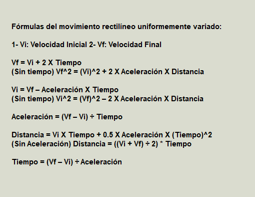
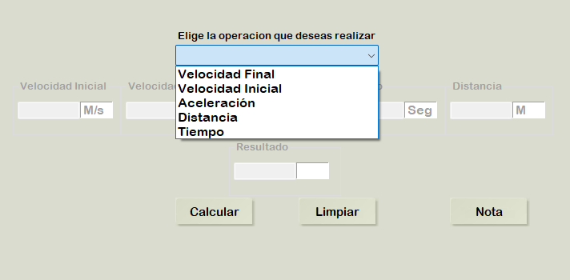
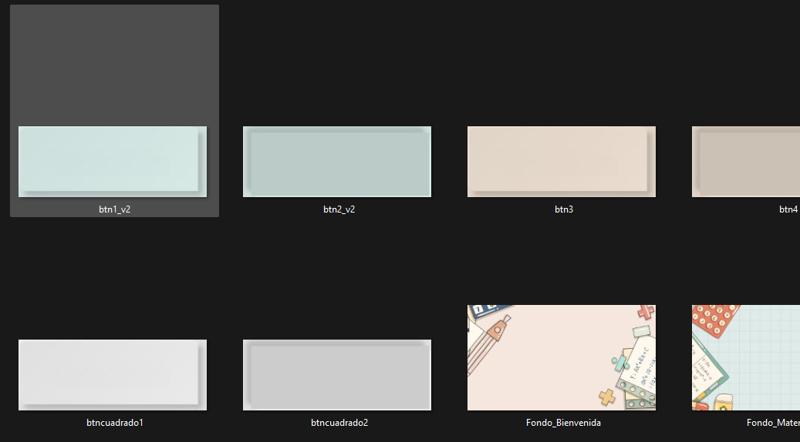

Permiteme presentarte Nebula Dynamics!, esta es una herramienta que te acompañará en el extenso mundo de la física cinemática. Desde el movimiento rectilineo uniforme hasta las aceleraciones mas complejas. Esta herramienta cuenta con un sistema de variantes de formulas en el que mientras rellenas datos, se congelan los datos inncesesarios para la formula.
El primer paso fue la búsqueda de las fórmulas.
El segundo paso fue codificar las diferentes funcionalidades.
El tercer paso fue la creación de una interfaz de usuario tematizada con ayuda de editores de imágenes.
